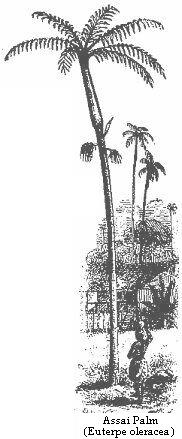

Preparations for the journey — The Bay of Goajará — Grove of fan-leaved Palms — The lower Tocantins — Sketch of the River — Vista alegre — Baiao — Rapids — Boat journey to the Guariba Falls — Native Life on the Tocantins — Second Journey to Cameta.
August 26th, 1848—Mr. Wallace and I started today on the excursion which I have already mentioned as having been planned with Mr. Leavens, up the river Tocantins, whose mouth lies about forty-five miles in a straight line, but eighty miles following the bends of the river channels to the southwest of Pará. This river, as before stated, has a course of 1600 miles, and stands third in rank amongst the streams which form the Amazons system. The preparations for the journey took a great deal of time and trouble. We had first to hire a proper vessel, a two-masted vigilinga twenty-seven feet long, with a flat prow and great breadth of beam and fitted to live in heavy seas; for, although our voyage was only a river trip, there were vast sea-like expanses of water to traverse. It was not decked over, but had two arched awnings formed of strong wickerwork, and thatched with palm leaves. We then had to store it with provisions for three months, the time we at first intended to be away; procure the necessary passports; and, lastly, engage a crew. Mr. Leavens, having had much experience in the country, managed all these matters. He brought two Indians from the rice-mills, and these induced another to enrol himself. We, on our parts, took our cook Isidoro, and a young Indian lad, named Antonio, who had attached himself to us in the course of our residence at Nazareth. Our principal man was Alexandro, one of Mr. Leavens’s Indians. He was an intelligent and well-disposed young Tapuyo, an expert sailor, and an indefatigable hunter. To his fidelity we were indebted for being enabled to carry out any of the objects of our voyage. Being a native of a district near the capital, Alexandro was a civilised Tapuyo, a citizen as free as his white neighbours. He spoke only Portuguese. He was a spare-built man, rather under the middle height, with fine regular features, and, what was unusual in Indians, the upper lip decorated with a moustache. Three years afterwards I saw him at Pará in the uniform of the National Guard, and he called on me often to talk about old times. I esteemed him as a quiet, sensible, manly young fellow.
We set sail in the evening, after waiting several hours in vain for one of our crew. It was soon dark, the wind blew stiffly, and the tide rushed along with great rapidity, carrying us swiftly past the crowd of vessels which were anchored in the port. The canoe rolled a good deal. After we had made five or six miles of way, the tide turned and we were obliged to cast anchor. Not long after, we lay ourselves down, all three together, on the mat which was spread over the floor of our cabin, and soon fell asleep.
On awaking at sunrise the next morning, we found ourselves gliding upwards with the tide, along the Bahia or Bay, as it is called, of Goajará. This is a broad channel lying between the mainland and a line of islands which extends some distance beyond the city. Into it three large rivers discharge their waters, namely, the Guamá, the Acará, and the Mojú; so that it forms a kind of sub-estuary within the grand estuary of Pará. It is nearly four miles broad. The left bank, along which we were now sailing, was beautiful in the extreme; not an inch of soil was to be seen; the water frontage presented a compact wall of rich and varied forest, resting on the surface of the stream. It seemed to form a finished border to the water scene, where the dome-like, rounded shapes of exogenous trees which constituted the mass formed the groundwork, and the endless diversity of broad-leaved Heliconiæ and Palms—each kind differing in stem, crown, and fronds—the rich embroidery. The morning was calm and cloudless; and the slanting beams of the early sun, striking full on the front of the forest, lighted up the whole most gloriously. The only sound of life which reached us was the call of the Serracúra (Gallinula Cayennensis), a kind of wild-fowl; all else was so still that the voices of boatmen could be plainly heard from canoes passing a mile or two distant from us. The sun soon gains great power on the water, but with it the sea-breeze increases in strength, moderating the heat which would otherwise be almost insupportable. We reached the end of the Goajará about midday, and then entered the narrower channel of the Mojú. Up this we travelled, partly rowing and partly sailing between the same unbroken walls of forest, until the morning of the 28th.
August 29th.—The Mojú, a stream slightly inferior to the Thames in size, is connected about twenty miles from its mouth by means of a short, artificial canal with a small stream, the Igarapé-mirim, which flows the opposite way into the water-system of the Tocantins. Small vessels like ours take this route in preference to the stormy passage by way of the main river, although the distance is considerably greater. We passed through the canal yesterday, and today have been threading our way through a labyrinth of narrow channels, their banks all clothed with the same magnificent forest, but agreeably varied by houses of planters and settlers. We passed many quite large establishments, besides one pretty little village called Santa Anna. All these channels are washed through by the tides—the ebb, contrary to what takes place in the short canal, setting towards the Tocantins. The water is almost tepid (77° Fahr.), and the rank vegetation all around seems reeking with moisture. The country however, as we were told, is perfectly healthy. Some of the houses are built on wooden piles driven into the mud of the swamp.
In the afternoon we reached the end of the last channel, called the Murutipucú, which runs for several miles between two unbroken lines of fan-leaved palms, forming colossal palisades with their straight stems. On rounding a point of land, we came in full view of the Tocantins. The event was announced by one of our Indians, who was on the lookout at the prow, shouting: “La está o Paraná-uassú!” “Behold, the great river!” It was a grand sight—a broad expanse of dark waters dancing merrily to the breeze; the opposite shore, a narrow blue line, miles away.
We went ashore on an island covered with palm-trees, to make a fire and boil our kettle for tea. I wandered a short way inland, and was astounded at the prospect. The land lay below the upper level of the daily tides, so that there was no underwood, and the ground was bare. The trees were almost all of one species of Palm, the gigantic fan-leaved Mauritia flexuosa; only on the borders was there a small number of a second kind, the equally remarkable Ubussú palm, Manicaria saccifera. The Ubussú has erect, uncut leaves, twenty-five feet long, and six feet wide, all arranged round the top of a four-foot high stem, so as to form a figure like that of a colossal shuttlecock. The fan-leaved palms, which clothed nearly the entire islet, had huge cylindrical smooth stems, three feet in diameter, and about a hundred feet high. The crowns were formed of enormous clusters of fan-shaped leaves, the stalks alone of which measured seven to ten feet in length. Nothing in the vegetable world could be more imposing than this grove of palms. There was no underwood to obstruct the view of the long perspective of towering columns. The crowns, which were densely packed together at an immense height overhead, shut out the rays of the sun; and the gloomy solitude beneath, through which the sound of our voices seemed to reverberate, could be compared to nothing so well as a solemn temple. The fruits of the two palms were scattered over the ground; those of the Ubussu adhere together by twos and threes, and have a rough, brown-coloured shell; the fruit of the Mauritia, on the contrary, is of a bright red hue, and the skin is impressed with deep-crossing lines, which give it a resemblance to a quilted cricket-ball.
About midnight, the tide being favourable and the breeze strong, we crossed the river, taking it in a slanting direction, a distance of sixteen miles, and arrived at eight o’clock the following morning at Cametá. This is a town of some importance, pleasantly situated on the somewhat high terra firma of the left bank of the Tocantins. I will defer giving an account of the place till the end of this narrative of our Tocantins voyage. We lost here another of our men, who got drinking with some old companions ashore, and were obliged to start on the difficult journey up the river with two hands only, and they in a very dissatisfied humour with the prospect.
The river view from Cametá is magnificent. The town is situated, as already mentioned, on a high bank, which forms quite a considerable elevation for this flat country, and the broad expanse of dark-green waters is studded with low, palm-clad islands, the prospect down river, however, being clear, or bounded only by a sea-like horizon of water and sky. The shores are washed by the breeze-tossed waters into little bays and creeks, fringed with sandy beaches. The Tocantins has been likened, by Prince Adalbert of Prussia, who crossed its mouth in 1846, to the Ganges. It is upwards of ten miles in breadth at its mouth; opposite Cametá it is five miles broad. Mr. Burchell, the well-known English traveller, descended the river from the mining provinces of interior Brazil some years before our visit. Unfortunately, the utility of this fine stream is impaired by the numerous obstructions to its navigation in the shape of cataracts and rapids, which commence, in ascending, at about 120 miles above Cametá, as will be seen in the sequel.
August 30th.—Arrived, in company with Senhor Laroque, an intelligent Portuguese merchant, at Vista Alegre, fifteen miles above Cametá. This was the residence of Senhor Antonio Ferreira Gomez, and was a fair sample of a Brazilian planter’s establishment in this part of the country. The buildings covered a wide space, the dwelling-house being seParáted from the place of business, and as both were built on low, flooded ground, the communication between the two was by means of a long wooden bridge. From the office and visitors’ apartments a wooden pier extended into the river. The whole was raised on piles above the high-water mark. There was a rude mill for grinding sugar-cane, worked by bullocks; but cashaça, or rum, was the only article manufactured from the juice. Behind the buildings was a small piece of ground cleared from the forest, and planted with fruit trees, orange, lemon, genipapa, goyava, and others; and beyond this, a broad path through a neglected plantation of coffee and cacao, led to several large sheds, where the farinha, or mandioca meal, was manufactured. The plantations of mandioca are always scattered about in the forest, some of them being on islands in the middle of the river. Land being plentiful, and the plough, as well as, indeed, nearly all other agricultural implements, unknown, the same ground is not planted three years together; but a new piece of forest is cleared every alternate year, and the old clearing suffered to relapse into jungle.
We stayed here two days, sleeping ashore in the apartment devoted to strangers. As usual in Brazilian houses of the middle class, we were not introduced to the female members of the family, and, indeed, saw nothing of them except at a distance. In the forest and thickets about the place we were tolerably successful in collecting, finding a number of birds and insects which do not occur at Pará. I saw here, for the first time, the sky-blue Chatterer (Ampelis cotinga). It was on the topmost bough of a very lofty tree, and completely out of the reach of an ordinary fowling-piece. The beautiful light-blue colour of its plumage was plainly discernible at that distance. It is a dull, quiet bird. A much commoner species was the Cigana or Gipsy (Opisthocomus cristatus), a bird belonging to the same order (Gallinacea) as our domestic fowl. It is about the size of a pheasant; the plumage is dark brown, varied with reddish, and the head is adorned with a crest of long feathers. It is a remarkable bird in many respects. The hind toe is not placed high above the level of the other toes, as it is in the fowl order generally, but lies on the same plane with them; the shape of the foot becomes thus suited to the purely arboreal habits of the bird, enabling it to grasp firmly the branches of trees. This is a distinguishing character of all the birds in equinoctial America which represents the fowl and pheasant tribes of the old world, and affords another proof of the adaptation of the fauna to a forest region. The Cigana lives in considerable flocks on the lower trees and bushes bordering the streams and lagoons, and feeds on various wild fruits, especially the sour Goyava (Psidium sp.). The natives say it devours the fruit of arborescent Arums (Caladium arborescens), which grow in crowded masses around the swampy banks of lagoons. Its voice is a harsh, grating hiss; it makes the noise when alarmed or when disturbed by passing canoes, all the individuals sibilating as they fly heavily away from tree to tree. It is polygamous, like other members of the same order. It is never, however, by any chance, seen on the ground, and is nowhere domesticated. The flesh has an unpleasant odour of musk combined with wet hides—a smell called by the Brazilians catinga; it is, therefore, uneatable. If it be as unpalatable to carnivorous animals as it is to man, the immunity from persecution which it would thereby enjoy would account for its existing in such great numbers throughout the country.
We lost another of our crew here; and thus, at the commencement of our voyage, had before us the prospect of being forced to return, from sheer want of hands, to manage the canoe. Senhor Gomez, to whom we had brought letters of introduction from Senhor Joao Augusto Correia, a Brazilian gentlemen of high standing at Pará, tried what he could do to induce the canoe-men of his neighbourhood to engage with us, but it was a vain endeavour. The people of these parts seemed to be above working for wages. They are naturally indolent, and besides, have all some little business or plantation of their own, which gives them a livelihood with independence. It is difficult to obtain hands under any circumstances, but it was particularly so in our case, from being foreigners, and suspected, as was natural amongst ignorant people, of being strange in our habits. At length, our host lent us two of his slaves to help us on another stage, namely, to the village of Baiao, where we had great hopes of having this, our urgent want, supplied by the military commandant of the district.
September 2nd.—The distance from Vista Alegre to Baiao is about twenty-five miles. We had but little wind, and our men were therefore obliged to row the greater part of the way. The oars used in such canoes as ours are made by tying a stout paddle to the end of a long pole by means of woody lianas. The men take their stand on a raised deck, formed by a few rough planks placed over the arched covering in the fore part of the vessel, and pull with their backs to the stern. We started at six a.m., and about sunset reached a point where the west channel of the river, along which we had been travelling since we left Cametá, joined a broader middle one, and formed with it a great expanse of water. The islands here seem to form two pretty regular lines, dividing the great river into three channels. As we progressed slowly, we took the montaria, and went ashore, from time to time, to the houses, which were numerous on the river banks as well as on the larger islands. In low situations they had a very unfinished appearance, being mere frameworks raised high on wooden piles, and thatched with the leaves of the Ubussú palm. In their construction another palm tree is made much use of, viz., the Assai (Euterpe oleracea). The outer part of the stem of this species is hard and tough as horn; it is split into narrow planks, and these form a great portion of the walls and flooring. The residents told us that the western channel becomes nearly dry in the middle of the fine season, but that at high water, in April and May, the river rises to the level of the house floors. The river bottom is everywhere sandy, and the country perfectly healthy. The people seemed to all be contented and happy, but idleness and poverty were exhibited by many unmistakeable signs. As to the flooding of their island abodes, they did not seem to care about that at all. They seem to be almost amphibious, or as much at home on the water as on land. It was really quite alarming to see men and women and children, in little leaky canoes laden to the water-level with bag and baggage, crossing broad reaches of river. Most of them have houses also on the terra firma, and reside in the cool palm swamps of the Ygapó islands, as they are called, only in the hot and dry season. They live chiefly on fish, shellfish (amongst which were large Ampullariæ, whose flesh I found, on trial, to be a very tough morsel), the never failing farinha, and the fruits of the forest. Amongst the latter, the fruits of palm trees occupied the chief place. The Assai is the most in use, but this forms a universal article of diet in all parts of the country. The fruit, which is perfectly round, and about the size of a cherry, contains but a small portion of pulp lying between the skin and the hard kernel. This is made, with the addition of water, into a thick, violet-coloured beverage, which stains the lips like blackberries. The fruit of the Mirití is also a common article of food, although the pulp is sour and unpalatable, at least to European tastes. It is boiled, and then eaten with farinha. The Tucumá (Astrocaryum tucuma), and the Mucujá (Acrocomia lasiospatha), grow only on the mainland. Their fruits yield a yellowish, fibrous pulp, which the natives eat in the same way as the Mirití. They contain so much fatty matter, that vultures and dogs devour them greedily.
Early on the morning of September 3rd we reached the right or eastern bank, which is forty to sixty feet high at this point. The houses were more substantially built than those we had hitherto seen. We succeeded in buying a small turtle; most of the inhabitants had a few of these animals, which they kept in little enclosures made with stakes. The people were of the same class everywhere, Mamelucos. They were very civil; we were not able, however, to purchase much fresh food from them. I think this was owing to their really not having more than was absolutely required to satisfy their own needs. In these districts, where the people depend solely on fishing for animal food, there is a period of the year when they suffer hunger, so that they are disposed to highly prize a small stock when they have it. They generally answered in the negative when we asked, money in hand, whether they had fowls, turtles, or eggs to sell. “Nao ha, sinto que nao posso lhe ser bom;” or, “Nao ha, men coracao.” “We have none; I am sorry I cannot oblige you;” or, “There is none, my heart.”
Sept. 3rd to 7th.—At half-past eight a.m. we arrived at Baiao, which is built on a very high bank, and contains about 400 inhabitants. We had to climb to the village up a ladder, which is fixed against the bank, and, on arriving at the top, took possession of a room, which Senhor Seixas had given orders to be prepared for us. He himself was away at his sitio, and would not be here until the next day. We were now quite dependent upon him for men to enable us to continue our voyage, and so had no remedy but to wait his leisure. The situation of the place, and the nature of the woods around it, promised well for novelties in birds and insects; so we had no reason to be vexed at the delay, but brought our apparatus and store-boxes up from the canoe, and set to work.
The easy, lounging life of the people amused us very much. I afterwards had plenty of time to become used to tropical village life. There is a free, familiar, pro bono publico style of living in these small places, which requires some time for a European to fall into. No sooner were we established in our rooms, than a number of lazy young fellows came to look on and make remarks, and we had to answer all sorts of questions. The houses have their doors and windows open to the street, and people walk in and out as they please; there is always, however, a more secluded apartment, where the female members of the families reside. In their familiarity there is nothing intentionally offensive, and it is practised simply in the desire to be civil and sociable. A young Mameluco, named Soares, an Escrivao, or public clerk, took me into his house to show me his library. I was rather surprised to see a number of well-thumbed Latin classics: Virgil, Terence, Cicero’s Epistles, and Livy. I was not familiar enough, at this early period of my residence in the country, with Portuguese to converse freely with Senhor Soares, or ascertain what use he made of these books; it was an unexpected sight, a classical library in a mud-plastered and palm-thatched hut on the banks of the Tocantins.
The prospect from the village was magnificent, over the green wooded islands, far away to the grey line of forest on the opposite shore of the Tocantins. We were now well out of the low alluvial country of the Amazons proper, and the climate was evidently much drier than it is near Pará. They had had no rain here for many weeks, and the atmosphere was hazy around the horizon; so much so that the sun, before setting, glared like a blood-red globe. At Pará this never happens; the stars and sun are as clear and sharply defined when they peep above the distant treetops as they are at the zenith. This beautiful transparency of the air arises, doubtless, from the equal distribution through it of invisible vapour. I shall ever remember, in one of my voyages along the Pará river, the grand spectacle that was once presented at sunrise. Our vessel was a large schooner, and we were bounding along before a spanking breeze, which tossed the waters into foam as the day dawned. So clear was the air, that the lower rim of the full moon remained sharply defined until it touched the western horizon, whilst at the same time, the sun rose in the east. The two great orbs were visible at the same time, and the passage from the moonlit night to day was so gentle that it seemed to be only the brightening of dull weather. The woods around Baiao were of second growth, the ground having been formerly cultivated. A great number of coffee and cotton trees grew amongst the thickets. A fine woodland pathway extends for miles over the high, undulating bank, leading from one house to another along the edge of the cliff. I went into several of them, and talked to their inmates. They were all poor people. The men were out fishing, some far away, a distance of many days journey; the women plant mandioca, make the farinha, spin and weave cotton, manufacture soap of burnt cacao shells and andiroba oil, and follow various other domestic employments. I asked why they allowed their plantations to run to waste. They said that it was useless trying to plant anything hereabout; the Sauba ant devoured the young coffee trees, and everyone who attempted to contend against this universal ravager was sure to be defeated. The country, for many miles along the banks of the river, seemed to be well peopled. The inhabitants were nearly all of the tawny-white Mameluco class. I saw a good many mulattos, but very few negroes and Indians, and none that could be called pure whites.
When Senhor Seixas arrived, he acted very kindly. He provided us at once with two men, killed an ox in our honour, and treated us altogether with great consideration. We were not, however, introduced to his family. I caught a glimpse once of his wife, a pretty little Mameluco woman, as she was tripping with a young girl, whom I supposed to be her daughter, across the backyard. Both wore long dressing-gowns made of bright-coloured calico print, and had long wooden tobacco-pipes in their mouths. The room in which we slept and worked had formerly served as a storeroom for cacao, and at night I was kept awake for hours by rats and cockroaches, which swarm in all such places. The latter were running about all over the walls; now and then one would come suddenly with a whirr full at my face, and get under my shirt if I attempted to jerk it off. As to the rats, they were chasing one another by the dozens all night long over the floor, up and down the edges of the doors, and along the rafters of the open roof.
September 7th.—We started from Baiao at an early hour. One of our new men was a good-humoured, willing young mulatto named José; the other was a sulky Indian called Manoel, who seemed to have been pressed into our service against his will. Senhor Seixas, on parting, sent a quantity of fresh provisions on board. A few miles above Baiao the channel became very shallow; we ran aground several times, and the men had to disembark and shove the vessel off. Alexandro shot several fine fish here, with bow and arrow. It was the first time I had seen fish captured in this way. The arrow is a reed, with a steel barbed point, which is fixed in a hole at the end, and secured by fine twine made from the fibres of pineapple leaves. It is only in the clearest water that fish can be thus shot: and the only skill required is to make, in taking aim, the proper allowance for refraction.
The next day before sunrise a fine breeze sprang up, and the men awoke and set the sails. We glided all day through channels between islands with long, white, sandy beaches, over which, now and then, aquatic and wading birds were seen running. The forest was low, and had a harsh, dry aspect. Several palm trees grew here which we had not before seen. On low bushes, near the water, pretty, red-headed tanagers (Tanagra gularis) were numerous, flitting about and chirping like sparrows. About half-past four p.m., we brought to at the mouth of a creek or channel, where there was a great extent of sandy beach. The sand had been blown by the wind into ridges and undulations, and over the more moist parts, large flocks of sandpipers were running about. Alexandro and I had a long ramble over the rolling plain, which came as an agreeable change after the monotonous forest scenery amid which we had been so long travelling. He pointed out to me the tracks of a huge jaguar on the sand. We found here, also, our first turtle’s nest, and obtained 120 eggs from it, which were laid at a depth of nearly two feet from the surface, the mother first excavating a hole, and afterwards covering it up with sand. The place is discoverable only by following the tracks of the turtle from the water. I saw here an alligator for the first time, which reared its head and shoulders above the water just after I had taken a bath near the spot. The night was calm and cloudless, and we employed the hours before bedtime in angling by moonlight.
On the 10th, we reached a small settlement called Patos, consisting of about a dozen houses, and built on a high, rocky bank, on the eastern shore. The rock is the same nodular conglomerate which is found at so many places, from the seacoast to a distance of 600 miles up the Amazons. Mr. Leavens made a last attempt here to engage men to accompany us to the Araguaya, but it was in vain; not a soul could be induced by any amount of wages to go on such an expedition. The reports as to the existence of cedar were very vague. All said that the tree was plentiful somewhere, but no one could fix on the precise locality. I believe that the cedar grows, like all other forest trees, in a scattered way, and not in masses anywhere. The fact of its being the principal tree observed floating down with the current of the Amazons is to be explained by its wood being much lighter than that of the majority of trees. When the banks are washed away by currents, trees of all species fall into the river; but the heavier ones, which are the most numerous, sink, and the lighter, such as the cedar, alone float down to the sea.
Mr. Leavens was told that there were cedar trees at Trocará, on the opposite side of the river, near some fine rounded hills covered with forest, visible from Patos; so there we went. We found here several families encamped in a delightful spot. The shore sloped gradually down to the water, and was shaded by a few wide-spreading trees. There was no underwood. A great number of hammocks were seen slung between the tree trunks, and the litter of a numerous household lay scattered about. Women, old and young, some of the latter very good-looking, and a large number of children, besides pet animals, enlivened the encampment. They were all half-breeds, simple, well-disposed people, and explained to us that they were inhabitants of Cametá, who had come thus far, eighty miles, to spend the summer months. The only motive they could give for coming was that: “it was so hot in the town in the verao (summer), and they were all so fond of fresh fish.” Thus, these simple folks think nothing of leaving home and business to come on a three months’ picnic. It is the annual custom of this class of people throughout the province to spend a few months of the fine season in the wilder parts of the country. They carry with them all the farinha they can scrape together, this being the only article of food necessary to provide. The men hunt and fish for the day’s wants, and sometimes collect a little India-rubber, salsaparilla, or copaiba oil, to sell to traders on their return; the women assist in paddling the canoes, do the cooking, and sometimes fish with rod and line. The weather is enjoyable the whole time, and so days and weeks pass happily away.
One of the men volunteered to walk with us into the forest, and show us a few cedar trees. We passed through a mile or two of spiny thickets, and at length came upon the banks of the rivulet Trocará, which flows over a stony bed, and, about a mile above its mouth, falls over a ledge of rocks, thus forming a very pretty cascade. In the neighbourhood, we found a number of specimens of a curious land-shell, a large flat Helix, with a labyrinthine mouth (Anastoma). We learned afterwards that it was a species which had been discovered a few years previously by Dr. Gardner, the botanist, on the upper part of the Tocantins.
We saw here, for the first time, the splendid Hyacinthine macaw (Macrocercus hyacinthinus, Lath., the Araruna of the natives), one of the finest and rarest species of the Parrot family. It only occurs in the interior of Brazil, from 16° S. lat. to the southern border of the Amazons valley. It is three feet long from the beak to the tip of the tail, and is entirely of a soft hyacinthine blue colour, except round the eyes, where the skin is naked and white. It flies in pairs, and feeds on the hard nuts of several palms, but especially of the Mucujá (Acrocomia lasiospatha). These nuts, which are so hard as to be difficult to break with a heavy hammer, are crushed to a pulp by the powerful beak of this macaw.
Mr. Leavens was thoroughly disgusted with the people of Patos. Two men had come from below with the intention, I believe, of engaging with us, but they now declined. The inspector, constable, or governor of the place appeared to be a very slippery customer, and I fancy discouraged the men from going, whilst making a great show of forwarding our views. These outlying settlements are the resort of a number of idle, worthless characters. There was a kind of festival going on, and the people fuddled themselves with cashiri, an intoxicating drink invented by the Indians. It is made by soaking mandioca cakes in water until fermentation takes place, and tastes like new beer.
Being unable to obtain men, Mr. Leavens now gave up his project of ascending the river as far as the Araguaya. He assented to our request, however, to ascend to the cataracts near Arroyos. We started, therefore, from Patos with a more definite aim before us than we had hitherto. The river became more picturesque as we advanced. The water was very low, it being now the height of the dry reason; the islands were smaller than those further down, and some of them were high and rocky. Bold wooded bluffs projected into the stream, and all the shores were fringed with beaches of glistening white sand. On one side of the river there was an extensive grassy plain or campo with isolated patches of trees scattered over it. On the 14th and following day we stopped several times to ramble ashore. Our longest excursion was to a large shallow lagoon, choked up with aquatic plants, which lay about two miles across the campo. At a place called Juquerapuá, we engaged a pilot to conduct us to Arroyos, and a few miles above the pilot’s house, arrived at a point where it was not possible to advance further in our large canoe on account of the rapids.
September 16th.—Embarked at six a.m. in a large montaria which had been lent to us for this part of our voyage by Senhor Seixas, leaving the vigilinga anchored close to a rocky islet, named Santa Anna, to await our return. Isidoro was left in charge, and we were sorry to be obliged to leave behind also our mulatto José, who had fallen ill since leaving Baiao. We had then remaining only Alexandro, Manoel, and the pilot, a sturdy Tapuyo named Joaquim; scarcely a sufficient crew to paddle against the strong currents. At ten a.m. we arrived at the first rapids, which are called Tapaiunaquára. The river, which was here about a mile wide, was choked up with rocks, a broken ridge passing completely across it. Between these confused piles of stone the currents were fearfully strong, and formed numerous eddies and whirlpools. We were obliged to get out occasionally and walk from rock to rock, whilst the men dragged the canoe over the obstacles. Beyond Tapaiunaquára, the stream became again broad and deep, and the river scenery was beautiful in the extreme. The water was clear and of a bluish-green colour. On both sides of the stream stretched ranges of wooded hills, and in the middle picturesque islets rested on the smooth water, whose brilliant green woods fringed with palms formed charming bits of foreground to the perspective of sombre hills fading into grey in the distance. Joaquim pointed out to us grove after grove of Brazil nut trees (Bertholletia excelsa) on the mainland. This is one of the chief collecting grounds for this nut. The tree is one of the loftiest in the forest, towering far above its fellows; we could see the woody fruits, large and round as cannon-balls, dotted over the branches. The currents were very strong in some places, so that during the greater part of the way the men preferred to travel near the shore, and propel the boat by means of long poles.
We arrived at Arroyos about four o’clock in the afternoon, after ten hours’ hard pull. The place consists simply of a few houses built on a high bank, and forms a station where canoemen from the mining countries of the interior of Brazil stop to rest themselves before or after surmounting the dreaded falls and rapids of Guaribas, situated a couple of miles further up. We dined ashore, and in the evening again embarked to visit the falls. The vigorous and successful way in which our men battled with the terrific currents excited our astonishment. The bed of the river, here about a mile wide, is strewn with blocks of various sizes, which lie in the most irregular manner, and between them rush currents of more or less rapidity. With an accurate knowledge of the place and skilful management, the falls can be approached in small canoes by threading the less dangerous channels. The main fall is about a quarter of a mile wide; we climbed to an elevation overlooking it, and had a good view of the cataract. A body of water rushes with terrific force down a steep slope, and boils up with deafening roar around the boulders which obstruct its course. The wildness of the whole scene was very impressive. As far as the eye could see, stretched range after range of wooded hills and scores of miles of beautiful wilderness, inhabited only by scanty tribes of wild Indians. In the midst of such a solitude, the roar of the cataract seemed fitting music.
September 17th.—We commenced early in the morning our downward voyage. Arroyos is situated in about 4° 10' S. lat.; and lies, therefore, about 130 miles from the mouth of the Tocantins. Fifteen miles above Guaribas, another similar cataract called Tabocas lies across the river. We were told that there were in all fifteen of these obstructions to navigate, between Arroyos and the mouth of the Araguaya. The worst was the Inferno, the Guaribas standing second to it in evil reputation. Many canoes and lives have been lost here, most of the accidents arising through the vessels being hurled against an enormous cubical mass of rock called the Guaribinha, which we, on our trip to the falls in the small canoe, passed round with the greatest ease about a quarter of a mile below the main falls. This, however, was the dry season; in the time of full waters, a tremendous current sets against it. We descended the river rapidly, and found it excellent fun shooting the rapids. The men seemed to delight in choosing the swiftest parts of the current; they sang and yelled in the greatest excitement, working the paddles with great force, and throwing clouds of spray above us as we bounded downwards. We stopped to rest at the mouth of a rivulet named Caganxa. The pilot told us that gold had been found in the bed of this brook; so we had the curiosity to wade several hundred yards through the icy cold waters in search of it. Mr. Leavens seemed very much interested in the matter. He picked up all the shining stones he could espy in the pebbly bottom, in hopes of finding diamonds also. There is, in fact, no reason why both gold and diamonds should not be found here, the hills being a continuation of those of the mining countries of interior Brazil, and the brooks flowing through the narrow valleys between them.
On arriving at the place where we had left our canoe, we found poor José the mulatto much worse, so we hastened on to Juquerapuá to procure aid. An old half-caste woman took charge of him; she made poultices of the pulp of a wild fruit, administered cooling draughts made from herbs which grew near the house, and in fact, acted the part of nurse admirably. We stayed at this place all night and part of the following day, and I had a stroll along a delightful pathway, which led over hill and dale, two or three miles through the forest. I was surprised at the number and variety of brilliantly-coloured butterflies; they were all of small size and started forth from the low bushes, which bordered the road, at every step I took. I first heard here the notes of a trogon; it was seated alone on a branch, at no great elevation; a beautiful bird, with glossy-green back and rose-coloured breast (probably Trogon melanurus). At intervals it uttered, in a complaining tone, a sound resembling the words “quá, quá.” It is a dull inactive bird, and not very ready to take flight when approached. In this respect, however, the trogons are not equal to the jacamars, whose stupidity in remaining at their posts, seated on low branches in the gloomiest shades of the forest, is somewhat remarkable in a country where all other birds are exceedingly wary. One species of jacamar was not uncommon here (Galbula viridis); I sometimes saw two or three together seated on a slender branch, silent and motionless with the exception of a slight movement of the head; when an insect flew past within a short distance, one of the birds would dart off, seize it, and return again to its sitting-place. The trogons are found in the tropics of both hemispheres. The jacamars, which are clothed in plumage of the most beautiful golden-bronze and steel colours, are peculiar to tropical America.
At night I slept ashore as a change from the confinement of the canoe, having obtained permission from Senhor Joaquim to sling my hammock under his roof. The house, like all others in these out-of-the-way parts of the country, was a large open, palm-thatched shed, having one end enclosed by means of partitions also made of palm-leaves, so as to form a private apartment. Under the shed were placed all the household utensils; earthenware jars, pots, and kettles, hunting and fishing implements, paddles, bows and arrows, harpoons, and so forth. One or two common wooden chests serve to contain the holiday clothing of the females. There is no other furniture except a few stools and the hammock, which answers the purposes of chair and sofa. When a visitor enters, he is asked to sit down in a hammock; persons who are on intimate terms with each other recline together in the same hammock, one at each end. This is a very convenient arrangement for friendly conversation. There are neither tables nor chairs; the cloth for meals is spread on a mat, and the guests squat round in any position they choose. There is no cordiality of manners, but the treatment of the guests shows a keen sense of the duties of hospitality on the part of the host. There is a good deal of formality in the intercourse of these half-wild mamelucos, which, I believe, has been chiefly derived from their Indian forefathers, although a little of it may have been copied from the Portuguese.
A little distance from the house were the open sheds under which the farinha for the use of the establishment was manufactured. In the centre of each shed stood the shallow pans, made of clay and built over ovens, where the meal is roasted. A long flexible cylinder made of the peel of a marantaceous plant, plaited into the proper form, hung suspended from a beam; it is in this that the pulp of the mandioca is pressed, and from it the juice, which is of a highly poisonous nature, although the pulp is wholesome food, runs into pans placed beneath to receive it. A wooden trough, such as is used in all these places for receiving the pulp before the poisonous matter is extracted, stood on the ground, and from the posts hung the long wicker-work baskets, or aturas, in which the women carry the roots from the roça or clearing; a broad ribbon made from the inner bark of the monguba tree is attached to the rims of the baskets, and is passed round the forehead of the carriers, to relieve their backs in supporting the heavy load. Around the shed were planted a number of banana and other fruit trees; amongst them were the never-failing capsicum-pepper bushes, brilliant as holly-trees at Christmas time with their fiery-red fruit, and lemon trees; the one supplying the pungent, the other the acid, for sauce to the perpetual meal of fish. There is never in such places any appearance of careful cultivation—no garden or orchard. The useful trees are surrounded by weeds and bushes, and close behind rises the everlasting forest.
There were other strangers under Senhor Joaquim’s roof besides myself—mulattos, mamelucos, and Indian,—so we formed altogether a large party. Houses occur at rare intervals in this wild country, and hospitality is freely given to the few passing travellers. After a frugal supper, a large wood fire was lighted in the middle of the shed, and all turned in to their hammocks, and began to converse. A few of the party soon dropped asleep; others, however, kept awake until a very late hour telling stories. Some related adventures which had happened to them whilst hunting or fishing; others recounted myths about the Curupíra, and other demons or spirits of the forest. They were all very appropriate to the time and place, for now and then a yell or a shriek resounded through the gloomy wilderness around the shed. One old parchment-faced fellow, with a skin the colour of mahogany, seemed to be a capital story-teller; but I was sorry I did not know enough of the language to follow him in all the details which he gave. Amongst other things, he related an adventure he had once had with a jaguar. He got up from his hammock in the course of the narrative to give it the greater effect by means of gestures; he seized a bow and a large taquará arrow to show how he slew the beast, imitated its hoarse growl, and danced about the fire like a demon.
In descending the river we landed frequently, and Mr. Wallace and I lost no chance of adding to our collections, so that before the end of our journey, we had got together a very considerable number of birds, insects, and shells, chiefly taken, however, in the low country. Leaving Baiao, we took our last farewell of the limpid waters and varied scenery of the upper river, and found ourselves again in the humid flat region of the Amazons valley. We sailed down this lower part of the river by a different channel from the one we travelled along in ascending, and frequently went ashore on the low islands in mid-river. As already stated, these are covered with water in the wet season; but at this time, there having been three months of fine weather, they were dry throughout, and by the subsidence of the waters, placed four or five feet above the level of the river. They are covered with a most luxuriant forest, comprising a large number of india-rubber trees. We found several people encamped here, who were engaged in collecting and preparing the rubber, and thus had an opportunity of observing the process.
The tree which yields this valuable sap is the Siphonia elastica, a member of the Euphorbiaceous order; it belongs, therefore, to a group of plants quite different from that which furnishes the caoutchouc of the East Indies and Africa. This latter is the product of different species of Ficus, and is considered, I believe, in commerce, an inferior article to the India-rubber of Pará. The Siphonia elastica grows only on the lowlands in the Amazons region; hitherto, the rubber has been collected chiefly in the islands and swampy parts of the mainland within a distance of fifty to a hundred miles to the west of Pará; but there are plenty of untapped trees still growing in the wilds of the Tapajos, Madeira, Juruá, and Jauarí, as far as 1800 miles from the Atlantic coast. The tree is not remarkable in appearance; in bark and foliage it is not unlike the European ash. But the trunk, like that of all forest trees, shoots up to an immense height before throwing off branches. The trees seem to be no man’s property hereabout. The people we met with told us they came every year to collect rubber on these islands as soon as the waters had subsided, namely in August, and remained until January or February. The process is very simple. Every morning each person, man or woman, to whom is allotted a certain number of trees, goes the round of the whole and collects in a large vessel the milky sap which trickles from gashes made in the bark on the preceding evening, and which is received in little clay cups, or in ampullaria shells stuck beneath the wounds. The sap, which at first is of the consistence of cream, soon thickens; the collectors are provided with a great number of wooden moulds of the shape in which the rubber is wanted, and when they return to the camp, they dip them into the liquid, laying on, in the course of several days, one coat after another. When this is done, the substance is white and hard; the proper colour and consistency are given by passing it repeatedly through a thick black smoke obtained by burning the nuts of certain palm trees, after which process the article is ready for sale. India-rubber is known throughout the province only by the name of seringa, the Portuguese word for syringe; it owes this appellation to the circumstance that it was only in this form that the first Portuguese settlers noticed it to be employed by the aborigines. It is said that the Indians were first taught to make syringes of rubber by seeing natural tubes formed by it when the spontaneously-flowing sap gathered round projecting twigs. Brazilians of all classes still use it extensively in the form of syringes, for injections form a great feature in the popular system of cures; the rubber for this purpose is made into a pear- shaped bottle, and a quill fixed in the long neck.
September 24th.—Opposite Cametá, the islands are all planted with cacao, the tree which yields the chocolate nut. The forest is not cleared for the purpose, but the cacao plants are stuck in here and there almost at random amongst the trees. There are many houses on the banks of the river, all elevated above the swampy soil on wooden piles, and furnished with broad ladders by which to mount to the ground floor. As we passed by in our canoe, we could see the people at their occupations in the open verandas, and in one place saw a ball going on in broad daylight; there were fiddles and guitars hard at work, and a number of lads in white shirts and trousers dancing with brown damsels clad in showy print dresses. The cacao tree produces a curious impression on account of the flowers and fruit growing directly out of the trunk and branches. There is a whole group of wild fruit trees which have the same habit in this country. In the wildernesses where the cacao is planted, the collecting of the fruit is dangerous due to the number of poisonous snakes which inhabit the places. One day, when we were running our montaria to a landing-place, we saw a large serpent on the trees overhead as we were about to brush past; the boat was stopped just in the nick of time, and Mr. Leavens brought the reptile down with a charge of shot.
September 26th.—At length we got clear of the islands, and saw once more before us the sea-like expanse of waters which forms the mouth of the Tocantins. The river had now sunk to its lowest point, and numbers of fresh-water dolphins were rolling about in shoaly places. There are here two species, one of which was new to science when I sent specimens to England; it is called the Tucuxí (Steno tucuxi of Gray). When it comes to the surface to breathe, it rises horizontally, showing first its back fin, then draws an inspiration, and dives gently down, head foremost. This mode of proceeding distinguishes the Tucuxí at once from the other species, which is called Bouto or porpoise by the natives (Inia Geoffroyi of Desmarest). When this rises the top of the head is the part first seen; it then blows, and immediately afterwards dips head downwards, its back curving over, exposing successively the whole dorsal ridge with its fin. It seems thus to pitch heels over head, but does not show the tail fin. Besides this peculiar motion, it is distinguished from the Tucuxí by its habit of generally going in pairs. Both species are exceedingly numerous throughout the Amazons and its larger tributaries, but they are nowhere more plentiful than in the shoaly water at the mouth of the Tocantins, especially in the dry season. In the Upper Amazons a third pale flesh-coloured species is also abundant (the Delphinus pallidus of Gervais). With the exception of a species found in the Ganges, all other varieties of dolphin inhabit the sea exclusively. In the broader parts of the Amazons, from its mouth to a distance of fifteen hundred miles in the interior, one or other of the three kinds here mentioned are always heard rolling, blowing, and snorting, especially at night, and these noises contribute much to the impression of sea-wide vastness and desolation which haunts the traveller. Besides dolphins in the water, frigate birds in the air are characteristic of this lower part of the Tocantins. Flocks of them were seen the last two or three days of our journey, hovering above at an immense height. Towards night, we were obliged to cast anchor over a shoal in the middle of the river to await the ebb tide. The wind blew very strongly, and this, together with the incoming flow, caused such a heavy sea that it was impossible to sleep. The vessel rolled and pitched until every bone in our bodies ached with the bumps we received, and we were all more or less sea-sick. On the following day we entered the Anapú, and on the 30th September, after threading again the labyrinth of channels communicating between the Tocantins and the Moju, arrived at Pará.
I will now give a short account of Cametá, the principal town on the banks of the Tocantins, which I visited for the second time, in June, 1849; Mr. Wallace, in the same month, departed from Pará to explore the rivers Guamá and Capim. I embarked as passenger in a Cametá trading vessel, the St. John, a small schooner of thirty tons burthen. I had learnt by this time that the only way to attain the objects for which I had come to this country was to accustom myself to the ways of life of the humbler classes of the inhabitants. A traveller on the Amazons gains little by being furnished with letters of recommendation to persons of note, for in the great interior wildernesses of forest and river the canoe-men have pretty much their own way; the authorities cannot force them to grant passages or to hire themselves to travellers, and therefore, a stranger is obliged to ingratiate himself with them in order to get conveyed from place to place. I thoroughly enjoyed the journey to Cametá; the weather was again beautiful in the extreme. We started from Pará at sunrise on the 8th of June, and on the 10th emerged from the narrow channels of the Anapu into the broad Tocantins. The vessel was so full of cargo that there was no room to sleep in the cabin; so we passed the nights on deck. The captain or supercargo, called in Portuguese cabo, was a mameluco, named Manoel, a quiet, good-humoured person, who treated me with the most unaffected civility during the three days’ journey. The pilot was also a mameluco, named John Mendez, a handsome young fellow, full of life and spirit. He had on board a wire guitar or viola, as it is here called; and in the bright moonlight nights, as we lay at anchor hour after hour waiting for the tide, he enlivened us all with songs and music. He was on the best of terms with the cabo, both sleeping in the same hammock slung between the masts. I passed the nights wrapped in an old sail outside the roof of the cabin. The crew, five in number, were Indians and half-breeds, all of whom treated their two superiors with the most amusing familiarity, yet I never sailed in a better managed vessel than the St. John.
In crossing to Cametá we had to await the flood-tide in a channel called Entre-as-Ilhas, which lies between two islands in mid- river, and John Mendez, being in good tune, gave us an extempore song, consisting of a great number of verses. The crew lay about the deck listening, and all joined in the chorus. Some stanzas related to me, telling how I had come all the way from “Inglaterra,” to skin monkeys and birds and catch insects; the last-mentioned employment of course giving ample scope for fun. He passed from this to the subject of political parties in Cametá; and then, as all the hearers were Cametaenses and understood the hits, there were roars of laughter, some of them rolling over and over on the deck, so much were they tickled. Party spirit runs high at Cametá, not merely in connection with local politics, but in relation to affairs of general concern, such as the election of members to the Imperial Parliament, and so forth. This political strife is partly attributable to the circumstance that a native of Cametá, Dr. Angelo Custodio Correia, had been in almost every election, one of the candidates for the representation of the province. I fancied these shrewd but unsophisticated canoe-men saw through the absurdities attending these local contests, and hence their inclination to satirise them; they were, however, evidently partisans of Dr. Angelo. The brother of Dr. Angelo, Joao Augusto Correia, a distinguished merchant, was an active canvasser. The party of the Correias was the Liberal, or, as it is called throughout Brazil, the Santa Luzia faction; the opposite side, at the head of which was one Pedro Moraes, was the Conservative, or Saquarema party. I preserved one of the stanzas of the song, which, however, does not contain much point; it ran thus:—
Ora paná, tana paná!, pana taná,
Joao Augusto hé bonito e homem pimpao,
Mas Pedro hé feio e hum grande ladrao,
(Chorus) Ora paná, etc.
John Augustus is handsome and as a man ought to be,
But Peter is ugly and a great thief.
(Chorus) Ora paná, etc.
The canoe-men of the Amazons have many songs and choruses, with which they are in the habit of relieving the monotony of their slow voyages, and which are known all over the interior. The choruses consist of a simple strain, repeated almost to weariness, and sung generally in unison, but sometimes with an attempt at harmony. There is a wildness and sadness about the tunes which harmonise well with, and in fact are born of, the circumstances of the canoe-man’s life: the echoing channels, the endless gloomy forests, the solemn nights, and the desolate scenes of broad and stormy waters and falling banks. Whether they were invented by the Indians or introduced by the Portuguese it is hard to decide, as many of the customs of the lower classes of Portuguese are so similar to those of the Indians that they have become blended with them. One of the commonest songs is very wild and pretty. It has for refrain the words “Mai, Mai” (“Mother, Mother”), with a long drawl on the second word. The stanzas are quite variable; the best wit on board starts the verse, improvising as he goes on, and the others join in the chorus. They all relate to the lonely river life and the events of the voyage—the shoals, the wind, how far they shall go before they stop to sleep, and so forth. The sonorous native names of places, Goajará, Tucumandúba, etc., add greatly to the charm of the wild music. Sometimes they bring in the stars thus:—
A lua está sahindo,
Mai, Mai!
A lua está sahindo,
Mai, Mai!
As sete estrellas estao chorando,
Mai, Mai!
Por s’acharem desamparados,
Mai, Mai!
The moon is rising,
Mother, Mother!
The moon is rising,
Mother, Mother!
The seven stars (Pleiades) are weeping,
Mother, Mother!
To find themselves forsaken,
Mother, mother!
I fell asleep about ten o’clock, but at four in the morning John Mendez woke me to enjoy the sight of the little schooner tearing through the waves before a spanking breeze. The night was transparently clear and almost cold, the moon appeared sharply defined against the dark blue sky, and a ridge of foam marked where the prow of the vessel was cleaving its way through the water. The men had made a fire in the galley to make tea of an acid herb, called erva cidreira, a quantity of which they had gathered at the last landing-place, and the flames sparkled cheerily upwards. It is at such times as these that Amazon travelling is enjoyable, and one no longer wonders at the love which many, both natives and strangers, have for this wandering life. The little schooner sped rapidly on with booms bent and sails stretched to the utmost; just as day dawned, we ran with scarcely slackened speed into the port of Cameta, and cast anchor.
I stayed at Cametá until the 16th of July, and made a considerable collection of the natural productions of the neighbourhood. The town in 1849 was estimated to contain about 5000 inhabitants, but the municipal district of which Cametá is the capital numbered 20,000; this, however, comprised the whole of the lower part of the Tocantins, which is the most thickly populated part of the province of Pará. The productions of the district are cacao, india-rubber, and Brazil nuts. The most remarkable feature in the social aspect of the place is the hybrid nature of the whole population, the amalgamation of the white and Indian races being here complete. The aborigines were originally very numerous on the western bank of the Tocantins, the principal tribe having been the Camútas, from which the city takes its name. They were a superior nation, settled, and attached to agriculture, and received with open arms the white immigrants who were attracted to the district by its fertility, natural beauty, and the healthfulness of the climate. The Portuguese settlers were nearly all males, the Indian women were good-looking, and made excellent wives; so the natural result has been, in the course of two centuries, a complete blending of the two races. There is now, however, a considerable infusion of negro blood in the mixture, several hundred African slaves having been introduced during the last seventy years. The few whites are chiefly Portuguese, but there are also two or three Brazilian families of pure European descent. The town consists of three long streets, running parallel to the river, with a few shorter ones crossing them at right angles. The houses are very plain, being built, as usual in this country, simply of a strong framework, filled up with mud, and coated with white plaster. A few of them are of two or three stories. There are three churches, and also a small theatre, where a company of native actors at the time of my visit were representing light Portuguese plays with considerable taste and ability. The people have a reputation all over the province for energy and perseverance; and it is often said that they are as keen in trade as the Portuguese. The lower classes are as indolent and sensual here as in other parts of the province, a moral condition not to be wondered at in a country where perpetual summer reigns, and where the necessities of life are so easily obtained. But they are light-hearted, quick-witted, communicative, and hospitable. I found here a native poet, who had written some pretty verses, showing an appreciation of the natural beauties of the country, and was told that the Archbishop of Bahia, the primate of Brazil, was a native of Cametá. It is interesting to find the mamelucos displaying talent and enterprise, for it shows that degeneracy does not necessarily result from the mixture of white and Indian blood. The Cametaenses boast, as they have a right to do, of theirs being the only large town which resisted successfully the anarchists in the great rebellion of 1835-6. Whilst the whites of Pará were submitting to the rule of half-savage revolutionists, the mamelucos of Cametá placed themselves under the leadership of a courageous priest, named Prudencio; they armed themselves, fortified the place, and repulsed the large forces which the insurgents of Pará sent to attack the place. The town not only became the refuge for all loyal subjects, but was a centre whence large parties of volunteers sallied forth repeatedly to attack the anarchists in their various strongholds.
The forest behind Cametá is traversed by several broad roads, which lead over undulating ground many miles into the interior. They pass generally under shade, and part of the way through groves of coffee and orange trees, fragrant plantations of cacao, and tracts of second-growth woods. The narrow brook-watered valleys, with which the land is intersected, alone have remained clothed with primæval forest, at least near the town. The houses along these beautiful roads belong chiefly to Mameluco, mulatto, and Indian families, each of which has its own small plantation. There are only a few planters with larger establishments, and these have seldom more than a dozen slaves. Besides the main roads, there are endless bye-paths which thread the forest and communicate with isolated houses. Along these the traveller may wander day after day without leaving the shade, and everywhere meet with cheerful, simple, and hospitable people.
Soon after landing, I was introduced to the most distinguished citizen of the place, Dr. Angelo Custodio Correia, whom I have already mentioned. This excellent man was a favourable specimen of the highest class of native Brazilians. He had been educated in Europe, was now a member of the Brazilian Parliament, and had been twice president of his native province. His manners were less formal, and his goodness more thoroughly genuine, perhaps, than is the rule generally with Brazilians. He was admired and loved, as I had ample opportunity of observing, throughout all Amazonia. He sacrificed his life in 1855, for the good of his fellow- townsmen, when Cameta was devastated by the cholera; having stayed behind with a few heroic spirits to succour invalids and direct the burying of the dead, when nearly all the chief citizens had fled from the place. After he had done what he could, he embarked for Pará but was himself then attacked with cholera, and died on board the steamer before he reached the capital. Dr. Angelo received me with the usual kindness which he showed to all strangers. He procured me, unsolicited, a charming country house, free of rent, hired a mulatto servant for me, and thus relieved me of the many annoyances and delays attendant on a first arrival in a country town where even the name of an inn is unknown. The rocinha, thus given up for my residence, belonged to a friend of his, Senhor José Raimundo Furtado, a stout florid-complexioned gentleman, such a one as might be met with any day in a country town in England. To him also I was indebted for many acts of kindness.
The rocinha was situated near a broad grassy road bordered by lofty woods, which leads from Cametá to the Aldeia, a village two miles distant. My first walks were along this road. From it branches another similar but still more picturesque road, which runs to Curimá and Pacajá, two small settlements, several miles distant, in the heart of the forest. The Curimá road is beautiful in the extreme. About half a mile from the house where I lived, it crosses a brook flowing through a deep dell by means of a long rustic wooden bridge. The virgin forest is here left untouched; numerous groups of slender palms, mingled with lofty trees overrun with creepers and Parásites, fill the shady glen and arch over the bridge, forming one of the most picturesque scenes imaginable. A little beyond the bridge there was an extensive grove of orange and other trees, which yielded me a rich harvest. The Aldeia road runs parallel to the river, the land from the border of the road to the indented shore of the Tocantins forming a long slope which was also richly wooded; this slope was threaded by numerous shady paths, and abounded in beautiful insects and birds. At the opposite or southern end of the town, there was a broad road called the Estrada da Vacaria; this ran along the banks of the Tocantins at some distance from the river, and continued over hill and dale, through bamboo thickets and palm swamps, for about fifteen miles.
At Cametá I chanced to verify a fact relating to the habits of a large hairy spider of the genus Mygale, in a manner worth recording. The species was M. avicularia, or one very closely allied to it; the individual was nearly two inches in length of body, but the legs expanded seven inches, and the entire body and legs were covered with coarse grey and reddish hairs. I was attracted by a movement of the monster on a tree-trunk; it was close beneath a deep crevice in the tree, across which was stretched a dense white web. The lower part of the web was broken, and two small birds, finches, were entangled in the pieces; they were about the size of the English siskin, and I judged the two to be male and female. One of them was quite dead, the other lay under the body of the spider, not quite dead, and was smeared with the filthy liquor or saliva exuded by the monster. I drove away the spider and took the birds, but the second one soon died. The fact of species of Mygale sallying forth at night, mounting trees, and sucking the eggs and young of humming-birds, has been recorded long ago by Madame Merian and Palisot de Beauvois; but, in the absence of any confirmation, it has come to be discredited. From the way the fact has been related, it would appear that it had been merely derived from the report of natives, and had not been witnessed by the narrators. Count Langsdorff, in his Expedition into the Interior of Brazil, states that he totally disbelieved the story. I found the circumstance to be quite a novelty to the residents hereabout. The Mygales are quite common insects: some species make their cells under stones, others form artistical tunnels in the earth, and some build their dens in the thatch of houses. The natives call them Aranhas carangueijeiras, or crab-spiders. The hairs with which they are clothed come off when touched, and cause a peculiar and almost maddening irritation. The first specimen that I killed and prepared was handled incautiously, and I suffered terribly for three days afterwards. I think this is not owing to any poisonous quality residing in the hairs, but to their being short and hard, and thus getting into the fine creases of the skin. Some Mygales are of immense size. One day I saw the children belonging to an Indian family, who collected for me with one of these monsters secured by a cord round its waist, by which they were leading it about the house as they would a dog.
The only monkeys I observed at Cameta were the Couxio (Pithecia Satanas)—a large species, clothed with long brownish-black hair—and the tiny Midas argentatus. The Couxio has a thick bushy tail, and the hair of the head, which looks as if it had been carefully combed, sits on it like a wig. It inhabits only the most retired parts of the forest, on the terra firma, and I observed nothing of its habits. The little Midas argentatus is one of the rarest of the American monkeys; indeed, I have not heard of its being found anywhere except near Cametá, where I once saw three individuals, looking like so many white kittens, running along a branch in a cacao grove; in their motions, they resembled precisely the Midas ursulus already described. I saw afterwards a pet animal of this species, and heard that there were many so kept, and that they were esteemed as great treasures. The one mentioned was full-grown, although it measured only seven inches in length of body. It was covered with long, white, silky hairs, the tail being blackish, and the face nearly naked and flesh-coloured. It was a most timid and sensitive little thing. The woman who owned it carried it constantly in her bosom, and no money would induce her to part with her pet. She called it Mico. It fed from her mouth and allowed her to fondle it freely, but the nervous little creature would not permit strangers to touch it. If any one attempted to do so, it shrank back, the whole body trembling with fear, and its teeth chattered whilst it uttered its tremulous, frightened tones. The expression of its features was like that of its more robust brother, Midas ursulus; the eyes, which were black, were full of curiosity and mistrust, and were always kept fixed upon the person who attempted to advance towards it.
In the orange groves and other parts, humming-birds were plentiful, but I did not notice more than three species. I saw one day a little pigmy belonging to the genus Phæthornis in the act of washing itself in a brook; perched on a thin branch, one end of which was under water. It dipped itself, then fluttered its wings and pruned its feathers, and seemed thoroughly to enjoy itself alone in the shady nook which it had chosen—a place overshadowed by broad leaves of ferns and Heliconiæ. I thought, as I watched it, that there was no need for poets to invent elves and gnomes whilst Nature furnishes us with such marvellous little sprites ready at hand.
My return-journey to Pará afforded many incidents characteristic of Amazonian travelling. I left Cametá on the 16th of July. My luggage was embarked in the morning in the Santa Rosa, a vessel of the kind called cuberta, or covered canoe. The cuberta is very much used on these rivers. It is not decked, but the sides forward are raised and arched over so as to admit of cargo being piled high above the water-line. At the stern is a neat square cabin, also raised, and between the cabin and covered forepart is a narrow piece decked over, on which are placed the cooking arrangements. This is called the tombadilha or quarterdeck, and when the canoe is heavily laden, it goes underwater as the vessel heels over to the wind. There are two masts, rigged with fore and aft sails. The foremast has often besides a main and top sail. The forepart is planked over at the top, and on this raised deck the crew work the vessel, pulling it along, when there is no wind, by means of the long oars already described.
As I have just said, my luggage was embarked in the morning. I was informed that we should start with the ebb-tide in the afternoon; so I thought I should have time to pay my respects to Dr. Angelo and other friends, whose extreme courtesy and goodness had made my residence at Cametá so agreeable. After dinner the guests, according to custom at the house of the Correias, walked into the cool verandah which overlooks the river; and there we saw the Santa Rosa, a mere speck in the offing miles away, tacking down river with a fine breeze. I was now in a fix, for it would be useless attempting to overtake the cuberta, and besides the sea ran too high for any montaria. I was then told that I ought to have been aboard hours before the time fixed for starting, because when a breeze springs up, vessels start before the tide turns; the last hour of the flood not being very strong. All my precious collections, my clothes, and other necessaries were on board, and it was indispensable that I should be at Pará when the things were disembarked. I tried to hire a montaria and men, but was told that it would be madness to cross the river in a small boat with this breeze. On going to Senhor Laroque, another of my Cametá friends, I was relieved of my embarrassment, for I found there an English gentleman, Mr. Patchett of Pernambuco, who was visiting Pará and its neighbourhood on his way to England, and who, as he was going back to Pará in a small boat with four paddles, which would start at midnight, kindly offered me a passage. The evening from seven to ten o’clock was very stormy. About seven, the night became intensely dark, and a terrific squall of wind burst forth, which made the loose tiles fly over the housetops; to this succeeded lightning and stupendous claps of thunder, both nearly simultaneous. We had had several of these short and sharp storms during the past month. At midnight, when we embarked, all was as calm as though a ruffle had never disturbed air, forest, or river. The boat sped along like an arrow to the rhythmic paddling of the four stout youths we had with us, who enlivened the passage with their wild songs. Mr. Patchett and I tried to get a little sleep, but the cabin was so small and encumbered with boxes placed at all sorts of angles, that we found sleep impossible. I was just dozing when the day dawned, and, on awakening, the first object I saw was the Santa Rosa, at anchor under a green island in mid-river. I preferred to make the remainder of the voyage in company of my collections, so bade Mr. Patchett good-day. The owner of the Santa Rosa, Senhor Jacinto Machado, whom I had not seen before, received me aboard, and apologised for having started without me. He was a white man, a planter, and was now taking his year’s production of cacao, about twenty tons, to Pará. The canoe was very heavily laden, and I was rather alarmed to see that it was leaking at all points. The crew were all in the water diving about to feel for the holes, which they stopped with pieces of ray and clay, and an old negro was baling the water out of the hold. This was a pleasant prospect for a three-day voyage! Senhor Machado treated it as the most ordinary incident possible: “It was always likely to leak, for it was an old vessel that had been left as worthless high and dry on the beach, and he had bought it very cheap.”
When the leaks were stopped, we proceeded on our journey and at night reached the mouth of the Anapú. I wrapped myself in an old sail, and fell asleep on the raised deck. The next day, we threaded the Igarapé-mirim, and on the 19th descended the Mojú. Senhor Machado and I by this time had become very good friends. At every interesting spot on the banks of the Mojú, he manned the small boat and took me ashore. There are many large houses on this river belonging to what were formerly large and flourishing plantations, but which, since the Revolution of 1835-6, had been suffered to go to decay. Two of the largest buildings were constructed by the Jesuits in the early part of the last century. We were told that there were formerly eleven large sugar mills on the banks of the Mojú, whilst now there are only three. At Burujúba, there is a large monastery in a state of ruin; part of the edifice, however, was still inhabited by a Brazilian family. The walls are four feet in thickness. The long dark corridors and gloomy cloisters struck me as very inappropriate in the midst of this young and radiant nature. They would be better if placed on some barren moor in Northern Europe than here in the midst of perpetual summer. The next turn in the river below Burujúba brought the city of Pará into view. The wind was now against us, and we were obliged to tack about. Towards evening, it began to blow stiffly, the vessel heeled over very much, and Senhor Machado, for the first time, trembled for the safety of his cargo; the leaks burst out afresh when we were yet two miles from the shore. He ordered another sail to be hoisted in order to run more quickly into port, but soon afterwards an extra puff of wind came, and the old boat lurched alarmingly, the rigging gave way, and down fell boom and sail with a crash, encumbering us with the wreck. We were then obliged to have recourse to oars; and as soon as we were near the land, fearing that the crazy vessel would sink before reaching port, I begged Senhor Machado to send me ashore in the boat with the more precious portion of my collections.